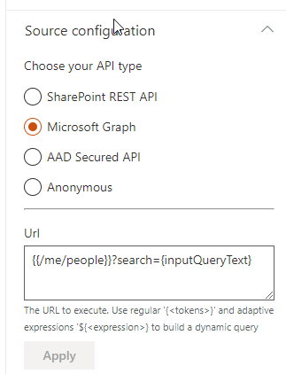

Tokens
Tokens give you the ability to write dynamic queries for your data sources by using the special syntax {<TokenName>}.
Where can I use tokens?¶
You can use tokens in the following locations:
-
Data Visualizer Web Part
- Builtin data sources
- SharePoint Search
- Query template field.
- Refinement filters field.
- SharePoint CAML
- Filter condition value using the dynamic menu.
- Anywhere in the CAML XML text if you are in 'Advanced' mode.
- OData
- URL field.
- SharePoint Search
- Layouts
- In the 'See all' link.
- Anywhere in custom data sources code using the
TokenServiceandresolveTokens()method.
- Builtin data sources
-
Data Verticals Web Part
- In the link URL when the vertical item is a link.
- In the vertical tab value.
Supported tokens (all data sources)¶
Tokens are case insensitive
You can escape curly braces characters using
'\'to avoid: ex:DepartmentId:\{edbfd618-ef1d-4cc5-a214-95bf44ddf4ee\}
Page tokens¶
| Token | Definition |
|---|---|
| {Page.<FieldName>} |
The value of a field on the page from where the query was issued. For example, if the page from where the query was issued contained a site column named "ContentOwner," specifying {Page.ContentOwner} would allow you to query for the value of "ContentOwner." FieldName is the internal name of the field. When used with taxonomy columns, use {Page.<FieldName>.Label} or {Page.<FieldName>.TermID} |
Connections tokens¶
Tokens related to connected Web Parts in the Data Visualizer.
These tokens can only be used in the 'Data Visualizer' Web Part.
| Token | Definition |
|---|---|
| {inputQueryText} |
The query value entered into a search box on a page. The value depends on the configuration of input text connection of the Data Visualizer Web Part. |
| {filters.<FilterName>.<valueAsObject|valueAsText|fromDate|toDate|operator>} | The current selected filters. 'FilterName' corresponds to the filter name specified in the Data Filters Web Part (not the display name). The availablue values for a filter are as follow:
If no filter are selected (i.e. no values), the {filters} expression will be resolved as an empty string ''. Use an adaptive expression if(empty('{filters}') to conditionnaly build your query acocrding to selected filters. Ex: https://graph.microsoft.com/v1.0/groups?&${if(empty('{filters}'),'',concat("&$filter=", buildOdataFilterCondition(json('{filters}'))))}.Note: this token is always parsed as an array of objects, ex [{...}]. |
| {itemsCountPerPage} | The number of items count per page configured in the 'Data Visualizer' Web Part. Useful for the OData source to specify a $top={itemsCountPerPage} parameter. |
| {startRow} | The next start row number according to current paging. Useful for the OData source to specify a $skipToken={startRow} or $skip={startRow} parameters. |
| {verticals.<value|name>} | If connected, get the current selected vertical tab name or associated value. |
Context tokens¶
| Token | Definition |
|---|---|
| {PageContext.<PropertyName>} | Resolves current SPFx page context related tokens. You can use deep paths here to access properties. Ex: {PageContext.site.absoluteUrl}. |
| {LegacyPageContext.<PropertyName>} | Resolves current SPFx legacy page context related tokens. You can use deep paths here to access properties. Ex: {LegacyPageContext.aadTenantId}. |
| {QueryString.<ParameterName>} |
A value from a query string in the URL of the current page. For example, if the URL of the current page contains a query string such as ItemNumber=567, you could obtain the value 567 by specifying {QueryString.ItemNumber}. |
| {CurrentDisplayLanguage} |
The current display language based on MUI in ll-cc format. |
| {CurrentDisplayLCID} |
Numeric value of the current display language based on MUI in ll-cc format. |
| {TenantUrl} |
URL of the tenant (root site) |
Site, web, hub, etc. tokens¶
Except for {Hub}, these a shortands to the {PageContext} tokens. They returns the same values. <PropertyName> is case sensitive.
| Token | Definition |
|---|---|
| {Site.<PropertyName>} | Resolves current site related tokens. You can use the 'Debug' layout and the context property to see all available values for a site. Ex {Site.id._guid} or {Site.absoluteUrl}. |
| {Hub.<PropertyName>} | Resolves current hub site related tokens. Valid property names are {Hub.HubSiteId}, {Hub.Id} and {Hub.IsHubSite}. |
| {Group.<PropertyName>} | Resolves current Office 365 group related tokens. You can use the 'Debug' layout and the context property to see all available values for a site. |
| {List.<PropertyName>} | Resolves current list related tokens. Ex {List.id._guid} or {List.absoluteUrl}. |
| {Web.<PropertyName>} | Resolves current web related tokens You can use the 'Debug' layout and the context property to see all available values for a site. Ex {Web.id._guid} or {Web.absoluteUrl}. |
User tokens¶
| Token | Definition |
|---|---|
| {User} or {User.Name} | Display name of the user who issued the query. For example, this value can be used to query content of the managed property Author. |
| {User.Email} | Email address of the user who issued the query. For example, this value can be used to query content of the managed property WorkEmail. |
| {User.PreferredContentLanguage} | Language as specified as Preferred Content Language in the profile of the user who issued the query. |
| {User.PreferredDisplayLanguage} | Language as specified as Preferred Display Language in the profile of the user who issued the query. |
| {User.<property>} | Any property from the user profile of the user who issued the query — for example, SPS-Interests, userprofile_guid, accountname, etc. including custom properties. |
Date tokens¶
| Token | Definition |
|---|---|
| {CurrentYear} | Todays's date four digits, 2018 |
| {CurrentMonth} | Today's month, 1-12 |
| {CurrentDate} | Today's date, 1-31 |
| {Today}+/- <integer value for number of days> |
A date calculated by adding/subtracting the specified number of days to/from the date when the query is issued. Date format is YYYY-MM-DD (Ex: {Today}+5) |
SharePoint search query variables¶
Supported variables¶
The SharePoint Search engine already supports tokens by default (i.e query variables, ex: {Site.ID}). You can use them in the Query template field only. To see the all the supported tokens natively, refer to the Microsoft documentation.
Use the 'OR' operator¶
To deal with mutli valued properties (like taxonomy multi or choices SharePoint fields), you can use the 'OR' operator syntax {|<property><operator><multi_values_property>}. The search query will be expanded to the following KQL or OData query:
((<property><operator><value_1>) OR (<property><operator><value_2>) OR (<property><operator><value_3>) ...)
Examples:
- Using an user profile multi values taxonomy property:
{|owstaxidmetadataalltagsinfo:{User.SPS-Hashtags}} - Using a page multi values taxonomy property:
{|owstaxidmetadataalltagsinfo:{Page.myTaxonomyMultiColumn.TermID}}or{|owstaxidmetadataalltagsinfo:{Page.myTaxonomyMultiColumn.TermLabel}} - Using a page multi values choice property:
{|RefinableStringXX:{Page.myChoiceMultiColumn}} - Filter on a field with SharePoint REST API using OData:
{&fields/FileLeafRef eq title1,title2}
At any time, you can see the resolved query using the 'Debug' layout an inspecting the data.queryModification property.
Note
Multi values have to be separated by a comma , to be correctly interpreted by the OR operator. Using a multi taxonomy column (ex {Page.myTaxonomyMultiColumn.TermID}) or a multi choice field {Page.myChoiceMultiColumn} will automatically output values with the comma delimiter.
The expression will be considered as an OData query if the operator is either 'eq','ne','ge','gt','lt' or 'le'. In this case, the logical operator will be automatically format to lower case and values enclosed with single quotes to comply with OData format.
OData Data Source default URL syntax¶
The OData Data source supports a special URL syntax allowing to execute a specifc part of that URL only during the first execution by using {{ and }} enclosing characters sequence. This could be convenient for an URL containing dynamic OData filter conditions like $filter=startswith(MyField,'{inputQueryText'} that may be invalid due to incorrect or unavailable values during first load resulting of API error.
Example:

In this example, {{/me/people}} means only /me/people part of the URL will be executed during the first load,, retrieving the all list of users without any condition. However, on subsequent requests, the complete URL /me/people?search={inputQueryText}} will be executed with the correct token values.
Token resolution notes¶
To help you to write your queries, here are some hints about the token resolution process:
- If token doesn't exist in the environment, it will left untouched .Ex:
/me/people?search={tokenthatnotexists}will be sent as is without modification. For instance if you use{verticals.value}or{filters.<field>.valueAsText}but there re no such Web Parts connect, tokens will be left untouched. - If the token exists but don't have any value or empty string (ex:
nullor''), it will be replaced by an empty string as we don't want the string 'null' litterally. - Tokens containinrefering to conmplex proeprties like arrays, objects, or array of objects will always be resolved as an array. Ex: an object
{'property':'value'}will be stringified as[{'property':'value'}].
Go further with Microsoft Adaptive expressions¶
Along tokens, you can also use Microsoft adaptive expressions for complex scenarios. See Adaptive expressions usage for more information.